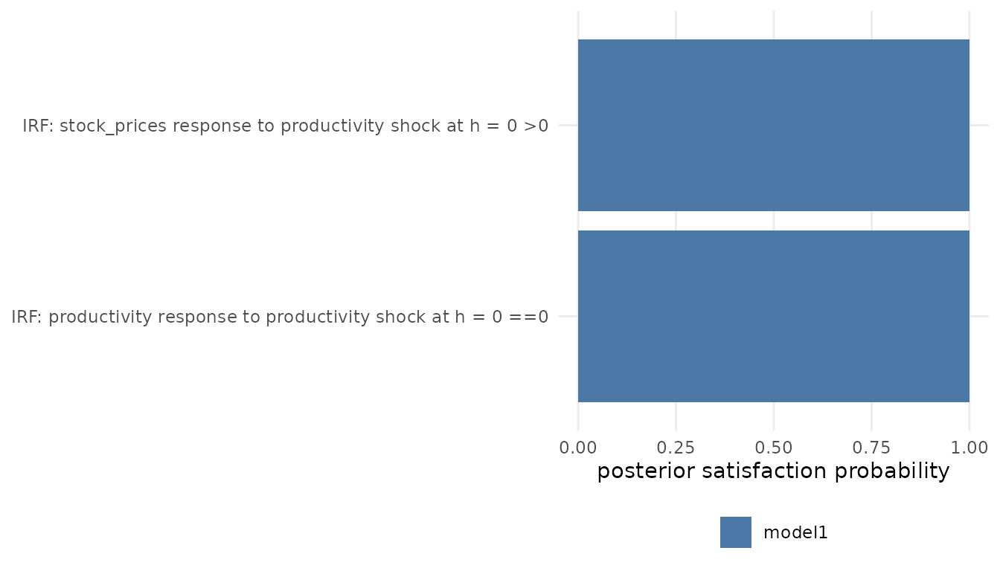
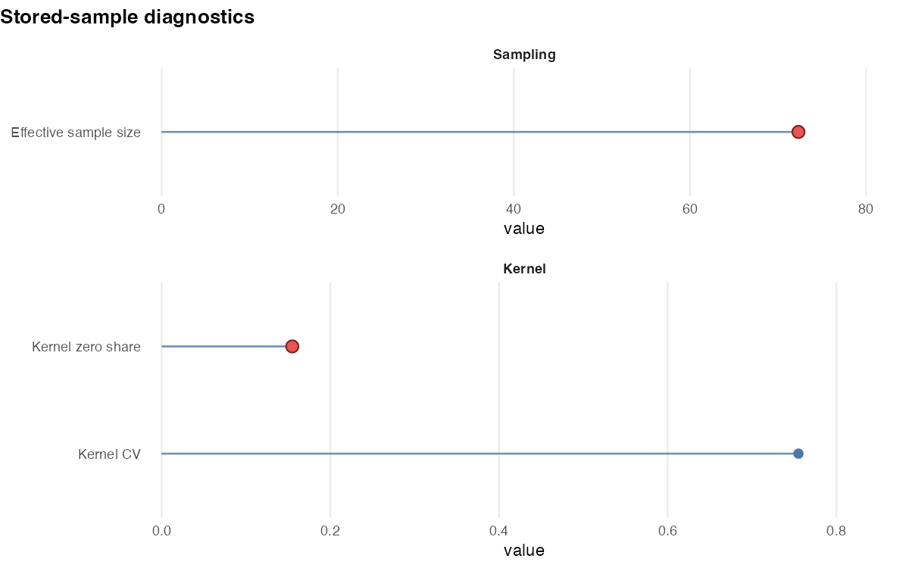
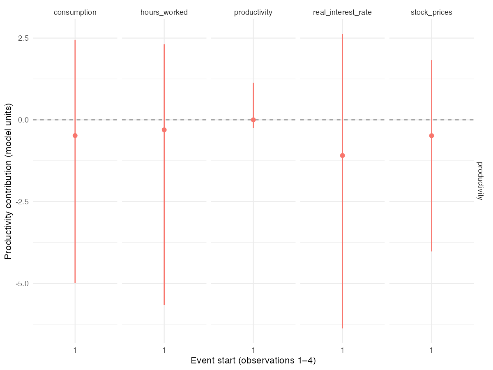
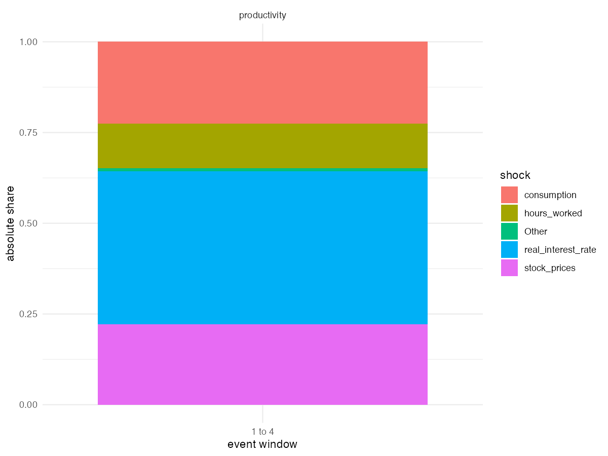
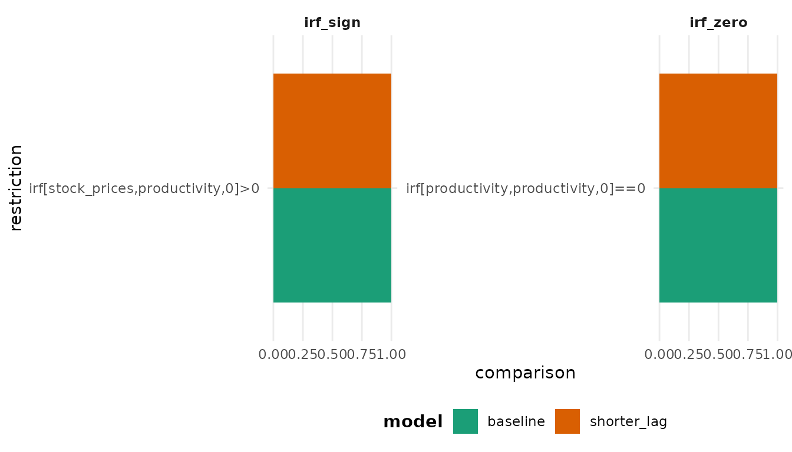
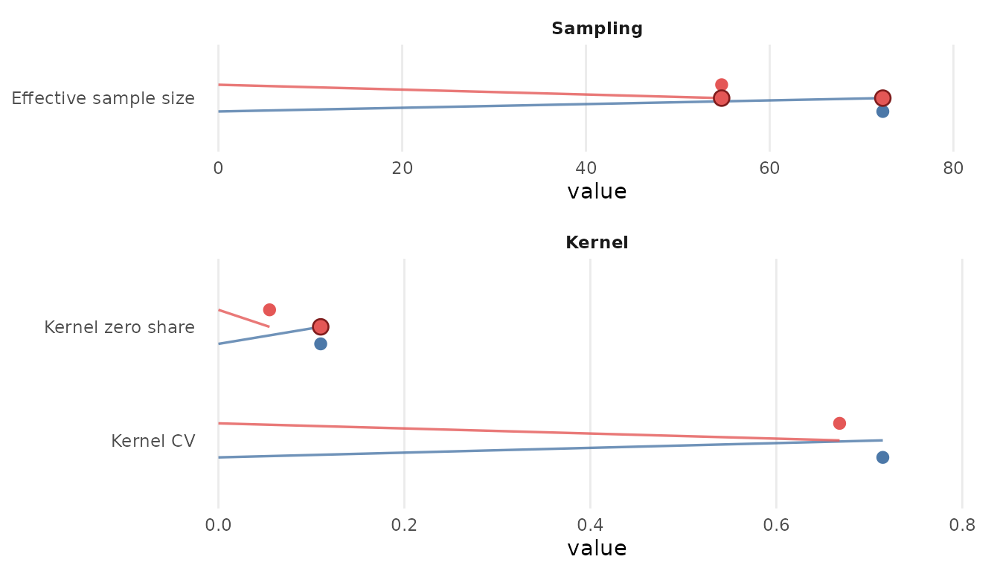

Analysis of Sign-Restricted Models
Source:vignettes/sign-restricted-workflows.Rmd
sign-restricted-workflows.RmdThis article presents posterior analyses for a
PosteriorBSVARSIGN object estimated with bsvarSIGNs. The
identifying scheme can combine sign and zero restrictions on impulse
responses, sign restrictions on the structural matrix and structural
shocks, and narrative restrictions on structural shocks and historical
decompositions.
Three distinct posterior quantities are considered:
| Question | Function | What the result means |
|---|---|---|
| Which admissible draw is representative of the posterior distribution? |
most_likely_admissible_irf() or
most_likely_admissible_cdm()
|
One posterior draw selected according to its admissibility weight |
| What is the posterior probability that each restriction is satisfied? | restriction_audit() |
Posterior satisfaction probability for each fitted restriction |
| Does the stored sample contain sufficient effective information and admissibility support? | acceptance_diagnostics() |
Effective sample size (ESS), search settings, restriction counts, and the distribution of admissibility weights |
These quantities have different interpretations. A representative draw is one joint draw from the posterior distribution and does not imply high posterior probabilities for all restrictions. Similarly, high restriction probabilities do not imply a large effective sample size or a dispersed distribution of admissibility weights.
Load demonstration draws
library(bsvarPost)
post_sign <- readRDS(system.file("extdata", "sign_post.rds",
package = "bsvarPost", mustWork = TRUE))
post_sign_alt <- readRDS(system.file("extdata", "sign_post_alt.rds",
package = "bsvarPost", mustWork = TRUE))
metadata <- read.csv(system.file("extdata", "demo-metadata.csv",
package = "bsvarPost", mustWork = TRUE))
metadata[3:4, c("file", "p", "seed", "draws", "bsvarSIGNs_version")]
#> file p seed draws bsvarSIGNs_version
#> 3 sign_post.rds 4 123 200 3
#> 4 sign_post_alt.rds 2 456 200 3Each model contains 200 retained draws for demonstration; this does
not establish sampling adequacy. The baseline has four lags and the
alternative two. All analysis chunks below execute using these installed
assets. See ?acceptance_diagnostics or
help(package = "bsvarPost") for offline help.
Posterior distribution
The example uses the optimism data from
bsvarSIGNs. The zero restriction excludes the
contemporaneous response of productivity to the optimism shock, whereas
the sign restriction imposes a positive contemporaneous response of
stock prices. The model is specified with
specify_bsvarSIGN$new() and its posterior distribution is
estimated with estimate().
The frozen input is multiplied by 100 before estimation. Seeds,
versions, restrictions and sample ranges are recorded in
demo-metadata.csv. The estimation recipe appears at
the end; it is optional when using the bundled draws.
Representative admissible draws
most_likely_admissible_irf() orders posterior draws by
the admissibility kernel of the sign-restricted model. When several
draws attain the largest weight, it selects the draw closest to the
posterior median impulse responses. The result contains the impulse
responses associated with one joint posterior draw rather than pointwise
marginal quantiles.
rep_irf <- most_likely_admissible_irf(post_sign, horizon = 12)
#> Argument standardise is forcibly set to FALSE due to zero restrictions imposed on the diagonal element(s) of the on-impact impulse response matrix.
#> Argument standardise is forcibly set to FALSE due to zero restrictions imposed on the diagonal element(s) of the on-impact impulse response matrix.
rep_irf$draw_index
#> [1] 4
rep_irf$score
#> [1] 0.0131408
rep_path <- subset(summary(rep_irf),
variable == "productivity" & shock == "productivity" &
horizon %in% c(0, 4, 8, 12),
select = c(variable, shock, horizon, median, draw_index, method, score))
rep_path
#> # A tibble: 4 × 7
#> variable shock horizon median draw_index method score
#> <chr> <chr> <dbl> <dbl> <int> <chr> <dbl>
#> 1 productivity productivity 0 0 4 most_likely_admis… 0.0131
#> 2 productivity productivity 4 -0.138 4 most_likely_admis… 0.0131
#> 3 productivity productivity 8 -0.112 4 most_likely_admis… 0.0131
#> 4 productivity productivity 12 -0.0729 4 most_likely_admis… 0.0131The plot() method displays the selected impulse
responses together with their pointwise posterior summaries. The red
line represents the selected posterior draw. It is neither a credible
interval nor a comparison of model specifications.
representative_plot <- publish_bsvar_plot(rep_irf, preset = "paper")This plot object contains all response panels retained in
rep_irf. The selected table above is only the
productivity-to-productivity panel.
most_likely_admissible_cdm() applies the same criterion
to cumulative dynamic responses computed for each posterior draw.
rep_cdm <- most_likely_admissible_cdm(post_sign, horizon = 12)
#> Argument standardise is forcibly set to FALSE due to zero restrictions imposed on the diagonal element(s) of the on-impact impulse response matrix.
#> Argument standardise is forcibly set to FALSE due to zero restrictions imposed on the diagonal element(s) of the on-impact impulse response matrix.
head(summary(rep_cdm))
#> # A tibble: 6 × 24
#> model object_type variable shock horizon mean median sd lower upper
#> <chr> <chr> <chr> <chr> <dbl> <dbl> <dbl> <dbl> <dbl> <dbl>
#> 1 mode… cdm product… prod… 0 0 0 NA 0 0
#> 2 mode… cdm product… prod… 1 -0.0283 -0.0283 NA -0.0283 -0.0283
#> 3 mode… cdm product… prod… 2 -0.0965 -0.0965 NA -0.0965 -0.0965
#> 4 mode… cdm product… prod… 3 -0.233 -0.233 NA -0.233 -0.233
#> 5 mode… cdm product… prod… 4 -0.371 -0.371 NA -0.371 -0.371
#> 6 mode… cdm product… prod… 5 -0.511 -0.511 NA -0.511 -0.511
#> # ℹ 14 more variables: analysis_type <chr>, interval_probability <dbl>,
#> # interval_method <chr>, scale_by <chr>, scale_var <chr>, scale_factor <dbl>,
#> # units <chr>, source_package <chr>, source_version <chr>, n_draws <int>,
#> # draw_index <int>, selected_draw_id <chr>, method <chr>, score <dbl>
representative_cdm_plot <- publish_bsvar_plot(rep_cdm, preset = "paper")The two functions answer different empirical questions. The first selects a draw using impulse responses, whereas the second uses cumulative dynamic responses. Therefore, they need not select the same posterior draw.
Posterior probabilities of restrictions
restriction_audit() evaluates the impulse-response,
zero, structural, and narrative restrictions specified for a
PosteriorBSVARSIGN object. For each restriction, the
posterior probability is estimated by the proportion of stored posterior
draws that satisfy it.
audit <- restriction_audit(post_sign, zero_tol = 1e-6)
#> Argument standardise is forcibly set to FALSE due to zero restrictions imposed on the diagonal element(s) of the on-impact impulse response matrix.
audit_focus <- audit[, c("restriction_type", "restriction", "relation",
"posterior_prob")]
audit_focus
#> # A tibble: 2 × 4
#> restriction_type restriction relation posterior_prob
#> <chr> <chr> <chr> <dbl>
#> 1 irf_zero irf[productivity,productivity,0]==0 ==0 1
#> 2 irf_sign irf[stock_prices,productivity,0]>0 >0 1The argument zero_tol sets the numerical tolerance for
zero restrictions. Its value should be chosen with respect to the scale
of the responses and reported with the results.
plot_restriction_audit() plots the posterior
probabilities of the selected restrictions. Formatted labels change
their presentation but not their definitions.
plot_restriction_audit(audit, label_style = "pretty",
restriction_types = c("irf_sign", "irf_zero"))
Restrictions imposed during estimation should generally have satisfaction probabilities near one, allowing for numerical precision and the chosen zero tolerance. A low value calls for investigation of the restriction definition, response scale and tolerance; it is not automatically evidence against the identifying assumption. A fitted restricted posterior cannot independently validate assumptions already imposed on it.
These probabilities are conditional on the estimated posterior distribution and, for zero restrictions, on the chosen tolerance. They are not sampler acceptance rates and do not describe the concentration of admissible posterior draws.
Posterior sample diagnostics
acceptance_diagnostics() summarises the stored posterior
sample. It reports the number of draws, importance-weight effective
sample size, max_tries, the numbers of restrictions, and
the distribution of admissibility weights.
diag <- acceptance_diagnostics(post_sign, ess_threshold = 100,
sparse_threshold = 0.10)
#> Argument standardise is forcibly set to FALSE due to zero restrictions imposed on the diagonal element(s) of the on-impact impulse response matrix.
subset(diag,
metric %in% c(
"posterior_draws", "effective_sample_size", "max_tries",
"kernel_zero_share", "kernel_cv"),
select = c(metric, value, flag, message))
#> # A tibble: 5 × 4
#> metric value flag message
#> <chr> <dbl> <lgl> <chr>
#> 1 posterior_draws 200 FALSE ""
#> 2 effective_sample_size 72.3 TRUE "ESS below threshold."
#> 3 max_tries Inf FALSE ""
#> 4 kernel_zero_share 0.11 TRUE "Large share of near-zero admissibility w…
#> 5 kernel_cv 0.715 FALSE ""effective_sample_size reports the upstream
importance-weight ESS,
,
computed before weighted resampling. It describes concentration of
importance weights, not an autocorrelation-based MCMC convergence
diagnostic. It cannot establish convergence or mixing.
kernel_zero_share is the proportion of approximately zero
admissibility weights, and kernel_cv measures their
relative dispersion. The restriction counts and max_tries
describe the search for admissible rotations.
The thresholds indicate a small effective sample or limited admissibility support. They are not general decision rules. Moreover, the stored posterior object does not contain the complete sequence of proposed and rejected draws.
The following plot uses exactly the loaded 200-draw baseline.
figure <- plot_acceptance_diagnostics(diag,
metrics = c("effective_sample_size", "kernel_zero_share", "kernel_cv"),
title = "Stored-sample diagnostics")
Baseline p=4, 200 retained draws: upstream importance-weight ESS and reconstructed admissibility-weight concentration. Red markers flag the illustrative diagnostic thresholds. These metrics are neither an MCMC convergence check nor sampler acceptance rates.
Historical decompositions
Historical decompositions attribute the observed series to the estimated structural shocks. For a selected period, the posterior contributions can be reported in levels or as proportions of their total magnitude. The figures below focus on productivity and present both summaries over observations 1 to 4.
figure <- plot_hd_event(post_sign, start = 1, end = 4,
variables = "productivity", probability = 0.90) +
ggplot2::labs(y = "Productivity contribution (model units)",
x = "Event start (observations 1–4)") +
ggplot2::theme(legend.position = "none")
Structural-shock contributions summed within each draw over observations 1–4. Productivity is in the transformed model-data units (optimism multiplied by 100). Points and intervals show posterior medians and 90% equal-tailed intervals.
figure <- plot_hd_event_share(post_sign, start = 1, end = 4, top_n = 4,
variables = "productivity",
probability = 0.90, share = "absolute")
Absolute shares of event productivity contributions over observations 1–4: four contributors and Other. Shares are unitless and describe absolute magnitude rather than signed net contributions; the plot shows the absolute value of each median contribution divided by their sum.
Comparison of model specifications
The posterior probabilities and sample diagnostics can be compared across alternative sign-restricted specifications. The specifications should contain the same variables and comparable identifying restrictions. The argument names identify the specifications in the resulting tables.
The loaded post_sign_alt uses the same restrictions and
input with two lags.
The restriction probabilities and posterior sample diagnostics are computed separately.
restriction_comparison <- compare_restrictions(baseline = post_sign,
shorter_lag = post_sign_alt, zero_tol = 1e-6)
#> Argument standardise is forcibly set to FALSE due to zero restrictions imposed on the diagonal element(s) of the on-impact impulse response matrix.
#> Argument standardise is forcibly set to FALSE due to zero restrictions imposed on the diagonal element(s) of the on-impact impulse response matrix.
diagnostic_comparison <- compare_acceptance_diagnostics(
baseline = post_sign,
shorter_lag = post_sign_alt,
ess_threshold = 100,
sparse_threshold = 0.10)
#> Argument standardise is forcibly set to FALSE due to zero restrictions imposed on the diagonal element(s) of the on-impact impulse response matrix.
#> Argument standardise is forcibly set to FALSE due to zero restrictions imposed on the diagonal element(s) of the on-impact impulse response matrix.compare_restrictions() reports posterior restriction
probabilities for each specification.
compare_acceptance_diagnostics() reports the corresponding
posterior sample diagnostics. These comparisons describe the estimated
posterior distributions and do not rank the economic plausibility of the
identifying assumptions.
plot_compare_restrictions(restriction_comparison,
restriction_types = c("irf_sign", "irf_zero"))
plot_acceptance_diagnostics(
diagnostic_comparison,
metrics = c("effective_sample_size", "kernel_zero_share", "kernel_cv"))
Estimate your own sign models
This recipe matches the bundled settings and frozen input. The demonstration sampling length is not a research recommendation. Numerical results can change with R or upstream versions even with the same seeds.
optimism_data <- readRDS(system.file("extdata", "optimism.rds",
package = "bsvarPost", mustWork = TRUE))
sign_irf <- matrix(c(0, 1, rep(NA_real_, 23)), 5, 5)
set.seed(123)
spec_sign <- bsvarSIGNs::specify_bsvarSIGN$new(optimism_data * 100, p = 4,
sign_irf = sign_irf)
post_sign <- bsvars::estimate(spec_sign, S = 200, thin = 1,
show_progress = FALSE)
set.seed(456)
spec_sign_alt <- bsvarSIGNs::specify_bsvarSIGN$new(optimism_data * 100, p = 2,
sign_irf = sign_irf)
post_sign_alt <- bsvars::estimate(spec_sign_alt, S = 200, thin = 1,
show_progress = FALSE)Summary
For the analysis of sign-restricted models:
- Report the effective sample size and the distribution of
admissibility weights using
acceptance_diagnostics(). - Report posterior restriction probabilities using
restriction_audit(). - Use a most-likely-admissible impulse or cumulative response when one joint posterior draw is required.
- Compare restriction probabilities and posterior sample diagnostics across economically relevant model specifications.
For posterior summaries, probability statements, response timing, plots, and tables, see Post-estimation Analysis with bsvarPost. The function reference documents filters, tolerances, and plotting arguments.